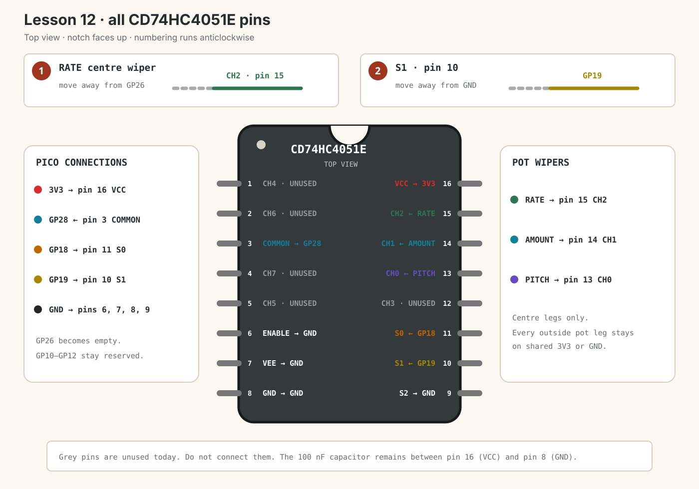

Dub Siren V3 · lesson 0012
Select three mux channels
Move Rate onto CH2 and use two Pico outputs to select Pitch, Amount or Rate through one ADC input.
1. Two bits select four possibilities
A selector line can hold either 0 or 1. With S0 alone, Lesson 11 could select two channels. Adding S1 gives four combinations:
| S2 | S1 | S0 | Channel | Control |
|---|---|---|---|---|
| 0 | 0 | 0 | CH0 · pin 13 | Pitch |
| 0 | 0 | 1 | CH1 · pin 14 | Amount |
| 0 | 1 | 0 | CH2 · pin 15 | Rate |
| 0 | 1 | 1 | CH3 · pin 12 | Unused |
Read the selector values as the binary number S2 S1 S0. CH2 is binary 010, so S1 is high while S0 and S2 are low.
Show answer
CH1 is binary 01: S1 = 0 and S0 = 1.
2. Make two changes with USB unplugged
- Unplug the Pico’s USB cable.
- Move the Rate centre wiper away from
GP26and connect it to 4051 CH2 pin 15. - Move 4051 S1 pin 10 away from GND and connect it to
GP19. - Keep S0 pin 11 on GP18 and S2 pin 9 on GND.
- Keep COMMON pin 3 on GP28.
- Keep every potentiometer’s two outside legs connected to shared 3V3 and GND.
- Keep the 4051 power, ENABLE, VEE and 100 nF capacitor exactly as in Lesson 11.

3. Let the channel number set S1 and S0
Run this main.py. It keeps Lesson 11’s scheduled reading and adds CH2:
from machine import Pin
from picozero import Button, LED, Pot
from time import sleep_ms, ticks_add, ticks_diff, ticks_ms
led = LED(15)
button = Button(14)
mux_adc = Pot(28)
# Two selector bits can choose CH0, CH1, CH2 or CH3.
# S2 remains connected to GND, so CH4-CH7 are not used yet.
mux_s0 = Pin(18, Pin.OUT)
mux_s1 = Pin(19, Pin.OUT)
PITCH_CHANNEL = 0
AMOUNT_CHANNEL = 1
RATE_CHANNEL = 2
MUX_SETTLE_MS = 2
CONTROL_SCAN_MS = 20
pitch_value = 0
amount_value = 0
rate_value = 0
last_pitch_hz = -1
last_amount = -1
last_rate = -1
last_change = ticks_ms()
light_on = False
next_control_scan = ticks_ms()
mux_waiting = False
mux_channel = PITCH_CHANNEL
mux_started = ticks_ms()
def select_mux_channel(channel):
# Channel numbers 0, 1 and 2 are binary 00, 01 and 10.
# "& 1" extracts the right-hand bit for S0.
mux_s0.value(channel & 1)
# ">> 1" moves the second bit right; "& 1" extracts it for S1.
mux_s1.value((channel >> 1) & 1)
def start_mux_read(channel):
global mux_channel, mux_started, mux_waiting
mux_channel = channel
select_mux_channel(channel)
mux_started = ticks_ms()
mux_waiting = True
def finish_mux_read():
global amount_value, mux_waiting, next_control_scan
global pitch_value, rate_value
reading = mux_adc.value
if mux_channel == PITCH_CHANNEL:
pitch_value += (reading - pitch_value) * 0.1
start_mux_read(AMOUNT_CHANNEL)
elif mux_channel == AMOUNT_CHANNEL:
amount_value += (reading - amount_value) * 0.1
start_mux_read(RATE_CHANNEL)
else:
rate_value += (reading - rate_value) * 0.1
mux_waiting = False
next_control_scan = ticks_add(ticks_ms(), CONTROL_SCAN_MS)
while True:
now = ticks_ms()
# Job 1: scan Pitch, Amount and Rate through the shared ADC.
if not mux_waiting and ticks_diff(now, next_control_scan) >= 0:
start_mux_read(PITCH_CHANNEL)
if mux_waiting and ticks_diff(now, mux_started) >= MUX_SETTLE_MS:
finish_mux_read()
# Print only when one of the controls changes enough to be useful.
pitch_hz = int(100 + pitch_value * 900)
if (
abs(pitch_hz - last_pitch_hz) >= 5
or abs(amount_value - last_amount) >= 0.03
or abs(rate_value - last_rate) >= 0.03
):
print(
"Pitch:", pitch_hz, "Hz",
"Amount:", round(amount_value, 2),
"Rate:", round(rate_value, 2),
)
last_pitch_hz = pitch_hz
last_amount = amount_value
last_rate = rate_value
# Job 2: Rate controls LED speed; Amount controls LED brightness.
if button.is_pressed:
interval = int(500 - rate_value * 450)
if ticks_diff(now, last_change) >= interval:
light_on = not light_on
last_change = now
led.value = amount_value if light_on else 0
else:
led.off()
light_on = False
last_change = now
sleep_ms(1)What the bit operations do
channel & 1 keeps only the rightmost binary bit for S0. (channel >> 1) & 1 first shifts the next bit right, then keeps it for S1.
Open Appendix 1: Bit operations →
| Channel number | Binary | S1 result | S0 result |
|---|---|---|---|
| 0 | 00 | 0 | 0 |
| 1 | 01 | 0 | 1 |
| 2 | 10 | 1 | 0 |
4. Test all three channels independently
- Reconnect USB and run the code.
- Turn Pitch. Only the printed Pitch value should change.
- Hold Trigger and turn Amount. LED brightness should change.
- Keep holding Trigger and turn Rate. LED flash speed should change.
- Leave every knob still. The three printed values should remain stable apart from tiny changes.
Rate works backwards
The two outside Rate wires are reversed. This is electrically safe. Unplug USB and swap those two outside wires; do not move the centre wiper.
Rate changes Amount or Pitch
First check Rate’s centre wiper goes to CH2 pin 15. Then check S1 pin 10 reaches GP19 and S0 pin 11 still reaches GP18.
Rate does nothing
Unplug USB. Check that the wiper left GP26 and now reaches CH2 pin 15. Pin 15 sits directly below VCC pin 16 when the chip notch faces up.
Done means
- You can explain why two selector bits offer four combinations.
- Pitch, Amount and Rate all travel through COMMON to GP28.
- GP18 drives S0 and GP19 drives S1.
- GP26 is free.
- All three controls keep their separate jobs.
Tell your teaching agent: whether each knob still performs only its own job, and what binary selector value chooses CH2.